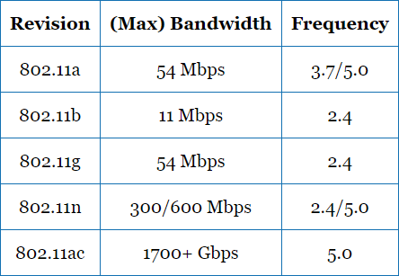

Background and History <<
Previous Next >> Sources of Interference
Speed,Range,and Frequencies
Bandwidth speed has been greatly improved through the revisions after 802.11b, as shown in the table below. When discussing data flow and speed, the two terms referred to are bandwidth and throughput. Though they are often used interchangeably, the two terms are different and need to be understood. Simply put, bandwidth is the theoretical maximum of the given standard, whereas throughput is the actual potential in a real-world scenario. Many factors affect actual throughput, such as frequency, channel overlap, and broadcast streams.
如下表所示，通過802.11b的修訂，帶寬速度得到了極大的提高。在討論數據流和速度時，所指的兩個術語是帶寬和吞吐量。儘管它們經常互換使用，但這兩個術語是不同的，需要理解。簡而言之，帶寬是給定標準的理論最大值，而吞吐量是實際情況下的實際潛力。許多因素都會影響實際的吞吐量，例如頻率，頻道重疊和廣播流。

The four wireless standards that are important to focus your studies on are 802.11a, 802.11b, 802.11g, and 802.11n. 802.11a operates in the 5 GHz frequency band, has a maximum bandwidth of 54 Mbps, and has a range of up to 35 meters indoors and 120 meters outdoors. 802.11b operates in the 2.4 GHz frequency band, has a maximum bandwidth of 11 Mbps, and has a range of up to 32 meters indoors and 140 meters outdoors. 802.11g operates in the 2.4 GHz frequency band, has a maximum bandwidth of 54 Mbps, and has a range of up to 32 meters indoors and 140 meters outdoors. 802.11n features a dual-band transceiver, operating in both the 2.4 GHz and 5 GHz frequency bands, has a maximum bandwidth of more than 300 Mbps, and has a range of up to 70 meters indoors and 250 meters outdoors.
專注於研究的四個無線標準是802.11a，802.11b，802.11g和802.11n。 802.11a工作在5 GHz頻段，最大帶寬為54 Mbps，室內的最大距離為35米，室外的最大距離為120米。 802.11b工作在2.4 GHz頻段，最大帶寬為11 Mbps，室內最大範圍為32米，室外最大範圍為140米。 802.11g工作在2.4 GHz頻段，最大帶寬為54 Mbps，室內最大範圍為32米，室外最大範圍為140米。 802.11n具有工作在2.4 GHz和5 GHz頻帶上的雙頻收發器，最大帶寬超過300 Mbps，室內最大範圍為70米，室外最大範圍為250米。
The 2.4 GHz frequency band is more robust than the 5.0 GHz in that it is less susceptible to interference and has a wider distance range. However, many more devices such as RC toys, cordless telephones, other radio devices such as mice and keyboards, and microwave ovens also operate in the 2.4 GHz frequency, so it is more crowded, which can have a negative impact on throughput. Although the 5.0 GHz frequency band is less crowded, it is more susceptible to obstructions such as building infrastructure (i.e., walls, floors, steel beams, etc.) due to absorption.
2.4 GHz頻段比5.0 GHz更加健壯，因為它不易受到干擾，並且距離範圍更廣。但是，更多的設備（例如RC玩具，無繩電話，其他無線電設備（例如，鼠標和鍵盤）和微波爐）也以2.4 GHz頻率運行，因此擁擠不堪，這可能會對吞吐量產生負面影響。儘管5.0 GHz頻帶的擁擠程度較小，但由於吸收，它更容易受到諸如建築基礎設施（即牆壁，地板，鋼樑等）的障礙物的影響。
Beginning with the 802.11n standard and subsequently moving to the current 802.11ac standard, manufacturers incorporated multiple antennae to achieve higher throughput. Known as multiple-input multiple-output (MIMO), both revisions accomplish the higher throughput by allowing operation at two different channel widths (20 and 40 MHz) within the same frequency and operate on both 2.4 GHz and 5.0 GHz frequency bands at the same time. Wireless N (802.11n) and wireless AC have a much larger bandwidth and maximum range, because they use MIMO and multiple frequency bands working in tandem to increase transmission and reception.
從802.11n標准開始，然後發展到當前的802.11ac標準，製造商採用了多個天線來實現更高的吞吐量。這兩種版本都稱為多輸入多輸出（MIMO），通過允許在同一頻率內在兩個不同的信道寬度（20和40 MHz）下運行，並在2.4 GHz和5.0 GHz頻段上同時運行，從而實現了更高的吞吐量。時間。無線N（802.11n）和無線AC具有更大的帶寬和最大範圍，因為它們使用MIMO和多個頻段協同工作以增加傳輸和接收。
An important note is that wireless N, G, and B are all compatible because they all support the 2.4 GHz frequency, allowing for backward compatibility. If you use multiple standards, like B, G, and N devices at the same time on a singular wireless N wireless access point, the WAP will default back to wireless B standards to support each device, which will significantly slow down the network. Wireless N and wireless A are compatible because they both use the 5 GHz frequency band. However, wireless A is not compatible with wireless B or G devices.
重要說明是，無線N，G和B都兼容，因為它們都支持2.4 GHz頻率，因此可以向後兼容。如果您在單個無線N無線接入點上同時使用多個標準，例如B，G和N設備，則WAP將默認恢復為無線B標準以支持每個設備，這將大大降低網絡速度。無線N和無線A兼容，因為它們都使用5 GHz頻帶。但是，無線A與無線B或G設備不兼容。
Background and History <<
Previous Next >> Sources of Interference